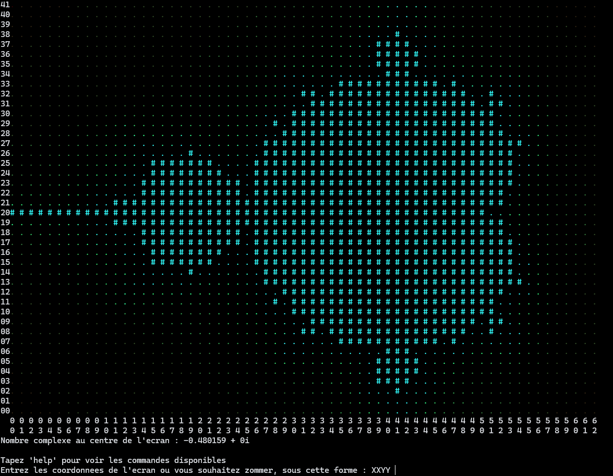
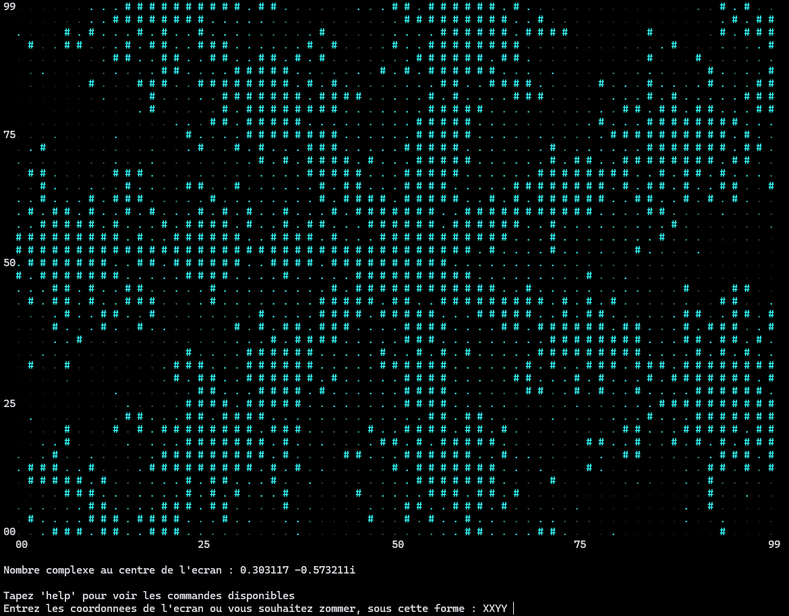

Observez l'ensemble de Mandelbrot, découvrez des régions magnifiques créés par des fractales infinies, admirez cet univers remplies de spirales et de branches symétriques. Profitez de tout cela sans jamais quitter l'invite de commande, ce qui rendra votre maîtrise du visualiseur d'autant plus simple.

